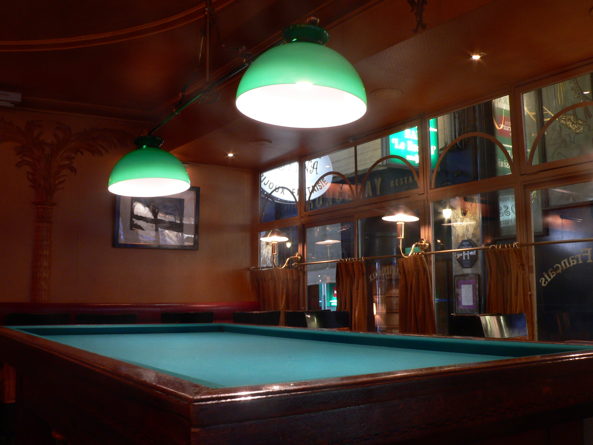

Lecture 14: Introduction and Syllabus Overview
Probability and Statistics

Probability is all about moving from cause to effect
- Known fact about the world \(\rightarrow\) probabilistic outcome
- Example: What is the chance I roll a fair die five times in a row and get five straight sixes?
Statistics is about how infer facts about the world based on observed data
- Probabilistic outcome \(\rightarrow\) unknown fact about the world
- Example: If I observe a die land on six five times in a row, how likely is it that the dice is loaded (unfair)?
The Story so Far
Until now, we’ve approached this probably with a particular style of thought experiment
- Make a supposition (null hypothesis) about the true probability
- Collect data
- Consider how unlikely our data are for that supposition
- Five straight sixes are possible for a fair die, but unlikely
- Unlikely enough to reject that as a model of the world?
Enter: Bayes

Thomas Bayes (1701-1761)
Almost 200 years before Sir Ronald Fisher laid the foundation for the frequentist approach, A relatively obscure English reverend had a different idea
- Born to a wealthy nonconformist Presbyterian minister in England
- Studied theology and logic at University of Edinburgh
- Presbyterians were not permitted to study in England
- Published pamphlets in defense of science and math against more conventional religious accusations that they were heretical
A Bayesian Thought Experiment

- Imagine you’re standing at a billiard table, facing away from the table
- I roll a cue ball, and I don’t tell you where it lands
- Indicate where you think the cue ball is likely to be on the table
- Think range, not point!
Thought Experiment Continued
- I then roll a 9-ball. I tell you it landed to the right of the cue ball
- Indicate where you think the cue ball is on the table
- I now roll a 4-ball. I tell you it landed to the right of the cue ball
- Indicate where you think the cue ball is on the table
- I now roll a 15-ball. I tell you it landed to the right of the cue ball
- Indicate where you think the cue ball is on the table
- Finally, I roll an 8-ball. I tell you it landed to the right of the cue ball
- Indicate where you think the cue ball is on the table
Bayes’ Rule Mark 1
This was the earliest iteration of Bayes rule
- Think of the cue ball as the true (unknown) parameter
- Defines whether subsequent throws will be to the right (success) or left (failure)
- Bayes suggested we take one of two options to start
- “Guess” where the cue ball is
- What would later be known as a “subjective prior”
- Allow for the cue ball to be anywhere
- What would later be known as a “uniform prior”
- “Guess” where the cue ball is
Competing Calculi
Two different notions of calculus were simultaneously emerging during Bayes’ time
- Newtonian calculus: focused on geometric representations
- Lebnitzian calculus: focused on algebriac representations
Newton’s calculus had much more difficult notation, so Lebnitz’s ultimately won out.
- During Bayes’ time, Newton’s calculus was prominent in England (and Scotland)
- We will not use Newton’s notation, so what we will describe is quite different than Bayes’ formal representation
Review: Probability Notation
- A Marginal Probability is the probability of some event all on its own, written \(P(X)\)
- A Conditional Probability is the probability that some event occurs, given that some other event has also occurred, written \(P(X|Y)\)
- A Joint Probability is the probability that one event and another event have both occurred \(P(X \cap Y)\)
Joint and Conditional Probability
We can move between conditional and joint probabilities as follows
\[P(X|Y) = \frac{P(X\cap Y)}{P(Y)}\]
\[P(X\cap Y) = P(X) \times P(Y|X)\]
General Representation
Let’s say we have two events, \(\color{blue}{A}\) and \(\color{red}{B}\).
- \(\color{blue}{A}\) is the location of the cue ball.
- More precisely, \(P(\color{blue}{A})\) is the probability a randomly rolled ball will land to its right
- We do not know \(P(\color{blue}{A})\)
- \(\color{red}{B}\) is the location of the nine ball
- More precisely, \(P(\color{red}{B})\) is the is probability a thrown ball will land to the right of the cue ball for any possible cue ball location
- \(P(\color{red}{B} | \color{blue}{A})\) is the is probability a thrown ball will land to the right of the cue ball for a specific possible cue ball location
Inverse Probability is the conditional probability of \(\color{blue}{A}\) given what we know about \(\color{red}{B}\) \(\color{#BAA53D}{P(A|B)}\). It’s what we learn about \(\color{blue}{A}\) by observing \(\color{red}{B}\)
Inverting Probability I
So how can we get to \(\color{#BAA53D}{P(A|B)}\)?
- We start with \(P(\color{red}{B}|\color{blue}{A})\)
- While \(\color{blue}{A}\) is unknown, we can consider every possibility of \(\color{blue}{A}\)
- Then we weight each possibility by our prior probability \(P(\color{blue}{A})\)
- Either our “guess” about the likely possible positions (subjective prior)
- Or we treat all possible \(\color{blue}{A}\)’s as equally likely (uniform prior)
Inverting Probability II
This gives us the joint probability of \(\color{blue}{A}\) and \(\color{red}{B}\):
\[\color{purple}{P(A \cap B)} = P(\color{blue}{A}) \times P(\color{red}{B}|\color{blue}{A})\]
- This is the probability that both \(A\) and \(B\) occur simultaneously for all possibilities of \(A\)
Joint Probability is the product of a conditional probability and the marginal probability to the event condition on
Inverting Probability III
This formula works in both directions!
\[\color{purple}{P(A \cap B)} = P(\color{red}{B}) \times \color{#BAA53D}{P(A|B)}\]
And if we divide both sides of this equation by \(P(\color{red}{B})\) we get
\[\frac{\color{purple}{P(A\cap B)}}{P(\color{red}{B})} = \color{#BAA53D}{P(A|B)}\]
But what is \(P(\color{red}{B})\)?
Inverting Probability IV
One way to think of \(P(\color{red}{B})\) is the probability of our known event (9-ball to the right of the cue ball) for all possibilities of our unknown event \(\color{blue}{A}\) (location of the cue ball)
\[P(\color{red}B) = P(\color{red}B|\color{blue}{A_1}) + P(\color{red}B|\color{blue}{A_2}) \dots P(\color{red}B|\color{blue}{A_k}) =\] \[\sum_{i=1}^k P(\color{red}B|\color{blue}{A_i})\]
Recap
We have established the following:
\[\frac{\color{purple}{P(A\cap B)}}{P(\color{red}{B})} = \color{#BAA53D}{P(A|B)}\] \[\color{purple}{P(A \cap B)} = P(\color{blue}{A}) \times P(\color{red}{B}|\color{blue}{A})\]
\[P(\color{red}{B}) = \sum_{i=1}^k P(\color{red}B|\color{blue}{A_i})\]
Substituting
To get to Bayes’ rule, all we have to do is substitute!
\[\color{#BAA53D}{P(A|B)} = \frac{\color{purple}{P(A\cap B)}}{P(\color{red}{B})} =\frac{P(\color{blue}{A}) \times P(\color{red}{B}|\color{blue}{A})}{P(\color{red}{B})} =\] \[\frac{P(\color{blue}{A}) \times P(\color{red}{B}|\color{blue}{A})}{\sum_{i=1}^k P(\color{red}B|\color{blue}{A_i})}\]
Most commonly (and most generally) it is written as:
\[\color{#BAA53D}{P(A|B)} =\frac{P(\color{blue}{A}) \times P(\color{red}{B}|\color{blue}{A})}{P(\color{red}{B})}\]
Read
We can read Bayes’ rule as saying:
- What we can learn about the unknown \(\color{blue}{A}\) given the known \(\color{red}{B}\) is:
- All possible ways the known \(\color{red}{B}\) could arise given a valid possible unknown \(\color{blue}{A}\)
- All possible ways the 9-ball could wind up to the right of the cue ball
- Weighted by our prior belief about the different possibilities for \(\color{blue}{A}\)
- Weighted by all possible locations of the clue ball
- Divided by all the ways the known \(\color{red}{B}\) could arise from the unknown \(\color{blue}{A}\)
- Divided by the sum of all possible ways the 9-ball could be to the right of the cue ball
- All possible ways the known \(\color{red}{B}\) could arise given a valid possible unknown \(\color{blue}{A}\)
Laplace vs. Bayes
- Bayes himself was a relatively obscure figure in his time
- Value of his work was recognized by a fellow minister, Richard Price
- Bayes’ rule was separately rediscovered by French statistician Pierre Simon Laplace
- Laplace is an S-tier figure in the history of science and statistics
- Could have easily called it “Laplace’s rule” but he met Price, learned about Bayes, and that’s why it’s called Bayes’ rule
What Happened?
- Laplace appreciated Bayes’ rule, but ultimately decided it was impractical
- If you collect enough data, it will eventually overwhelm your prior
- By the 20th century, science was rejecting all things subjective
- Fisher and most early 20th century statisticians refused to incorporate subjective belief into objective analysis
- Offending Fisher was not wise!
Likelihood \(\rightarrow\) Posterior
Using the likelihood notation we developed last time, we can write a more general version of Bayes’ rule as
\[P(\boldsymbol{\theta}|\boldsymbol{D}) = \frac{P(\boldsymbol{D}|\boldsymbol{\theta})P(\boldsymbol{\theta})}{P(\boldsymbol{D})}\]
- Prior: \(P(\boldsymbol{\theta})\)
- Likelihood: \(P(\boldsymbol{D}|\boldsymbol{\theta})\)
- Scaling term: \(P(\boldsymbol{D})\)
- Posterior: \(P(\boldsymbol{\theta}|\boldsymbol{D})\)
The Other Wrinkle
Besides the issue of subjectivity, it turns out one of these elements is uniquely challenging to handle from a computational perspective.
- Even if someone wanted to defy Fisher, there were sever logistical restrictions!
Can you guess which one?
It’s not the prior! Specifying priors is controversial, and not easy to do with technical sophistication, but they are relatively straightforward from a computational perspective
It’s not the likelihood! Computational algorithms made likelihood based analysis more accessible, but the computational hurdles to Bayes’ rule go fay beyond these
It’s the innocuous looking scaling term in the denominator. We’ll see how this got solved next time and start to implement Bayesian analyses